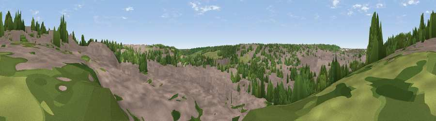

Viewpoint near Luton
#45928 in England · top 96% of its area beats it · near LutonWhere it is
The exact computed spot (TL 10325 21125). Click the marker for map links.
The view, rendered

A 360° render of this exact spot computed from the terrain model, tree cover and land cover — summer colours, afternoon light, calibrated against photographs of famous viewpoints. Real trees, hedges and buildings will differ in detail.
The panorama
Grey silhouette: terrain skyline in each direction (720 bearings, Earth curvature and refraction included). Dashed green: skyline with trees (+15 m) and buildings (+8 m) as obstacles. Blue strip: how far the ground is visible on each bearing.
Where the view opens
Wedge length = distance to the farthest visible ground on that bearing (vegetation-aware). Rings at 10, 25 and 50 km.
What fills the view
69% built-up · 21% woodland · 9% grassland ·
Angular shares of the visible panorama (visual magnitude), not map area. Landscape diversity 0.37 (0–1 Shannon).
Key numbers
More beautiful places nearby
The staircase of upgrades: each row has a higher view potential than everything closer. Driving times are estimates from straight-line distance, calibrated against real road routing — check an actual route before setting out.
| Place | Direction | Drive | Score |
|---|---|---|---|
| Viewpoint near Chaul End | W · 3 km | ~7 min | 21.7 |
| Viewpoint near Chaul End | W · 4 km | ~9 min | 25.4 |
| Warden Hill | NNW · 5 km | ~11 min | 52.5 |
| Viewpoint near Dunstable | W · 7 km | ~14 min | 53.7 |
| Viewpoint near Hexton | NNE · 8 km | ~17 min | 56.7 |
| Viewpoint near Hexton | N · 9 km | ~17 min | 64.2 |
| Viewpoint near Hexton | NNE · 9 km | ~18 min | 65.4 |
| Beacon Hill | WSW · 15 km | ~27 min | 74.1 |
51.87779, -0.39871 · source: screening · position refined by local search. Computed location — check access rights before visiting.